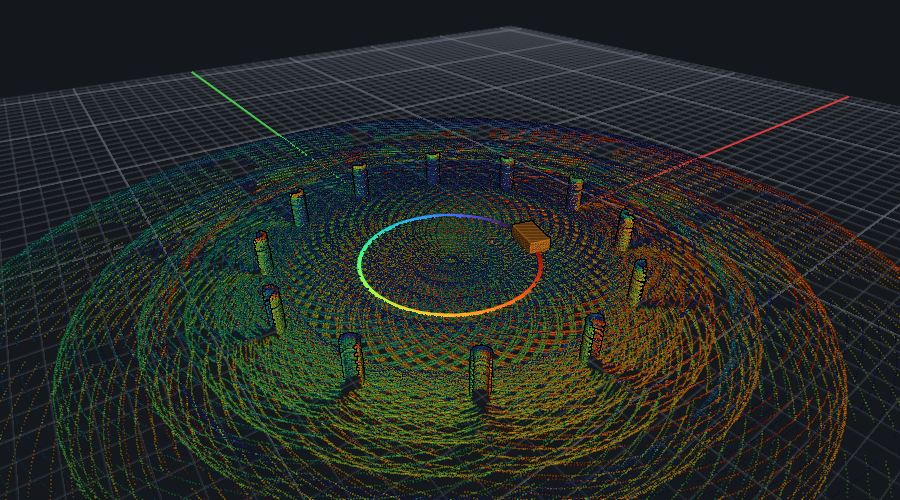
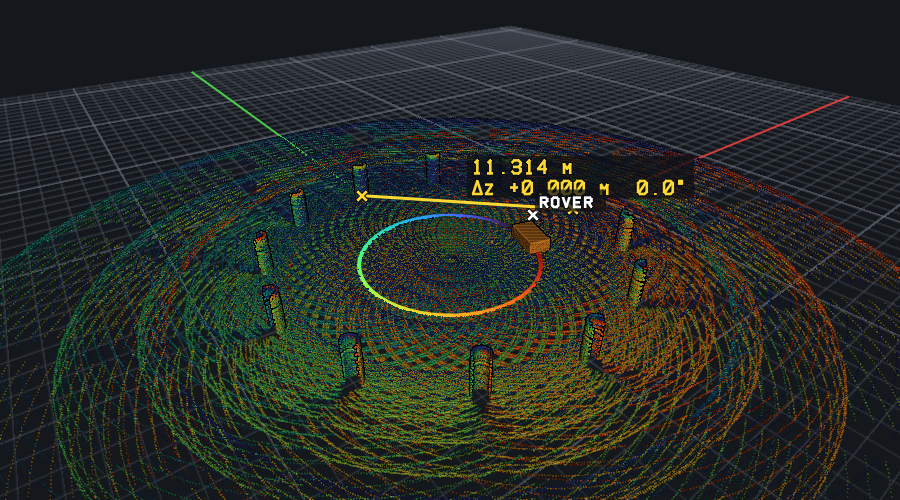

Live robot data
A diagnostic view of a running robot needs two things: things that move (the robot body, sensor frames) and data that keeps arriving (LiDAR scans). SpatialRender handles the first with poses and the second with streaming point clouds. Both can be updated from any task or thread while the viewer is open.
A moving body
Every layer has a pose: a transform from its own coordinates into the scene. set_pose! changes it without touching the vertex data, so moving a mesh is as cheap as setting one matrix.
using SpatialRender, Random
scene = Scene()
body = [Vec3f(x, y, z) for z in (0, 0.6) for y in (-0.5, 0.5) for x in (-0.9, 0.9)]
faces = [(1, 2, 4), (1, 4, 3), (5, 7, 8), (5, 8, 6), (1, 5, 6), (1, 6, 2),
(3, 4, 8), (3, 8, 7), (1, 3, 7), (1, 7, 5), (2, 6, 8), (2, 8, 4)]
verts = [MeshVertex(body[k], Vec3f(0, 0, 1)) for f in faces for k in f]
rover = TriMesh(verts, UInt32.(0:length(verts)-1); name = "rover", color = Vec4f(0.95, 0.55, 0.15, 1))
compute_normals!(rover)
add!(scene, rover)
set_pose!(rover, Vec3d(4, 2, 0), Quat(Vec3d(0, 0, 1), π / 4)) # 4 m east, 2 m north, facing NEStreaming scans
A StreamingPointCloud is a ring buffer: it holds the most recent capacity points, and only newly arrived points are sent to the GPU. push_scan! takes points in the sensor's frame plus the sensor's pose at the moment of the scan, so every scan lands where it was taken even while the robot moves.
Here a simulated rotating LiDAR scans a field of posts while the rover drives a circle:
rng = Xoshiro(1)
posts = [(8cos(a), 8sin(a)) for a in range(0, 2π, length = 13)[1:12]]
function scan(position, yaw) # returns points in the sensor frame
pts = Vec3f[]
for az in range(0, 2π, length = 721)[1:720], el in range(-0.3, 0.05, length = 12)
d = Vec3d(cos(az) * cos(el), sin(az) * cos(el), sin(el))
dw = Vec3d(cos(yaw) * d[1] - sin(yaw) * d[2], sin(yaw) * d[1] + cos(yaw) * d[2], d[3])
r = d[3] < 0 ? -position[3] / dw[3] : Inf # ground hit
for (px, py) in posts # post hits (radius 0.3 m)
ox, oy = position[1] - px, position[2] - py
b = ox * dw[1] + oy * dw[2]; c = ox^2 + oy^2 - 0.09
disc = b^2 - c * (dw[1]^2 + dw[2]^2)
disc > 0 && (t = (-b - sqrt(disc)) / (dw[1]^2 + dw[2]^2); 0 < t < r && (r = t))
end
r < 25 && push!(pts, Vec3f((r + 0.01randn(rng)) * d))
end
return pts
end
lidar = add!(scene, StreamingPointCloud(500_000; name = "lidar", max_age = 40))
trail = Vec3d[]
for t in 0:0.25:12
position = Vec3d(4cos(t / 2), 4sin(t / 2), 0); yaw = t / 2 + π / 2
set_pose!(rover, position, Quat(Vec3d(0, 0, 1), yaw))
sensor = position + Vec3d(0, 0, 1.2)
push_scan!(lidar, scan(sensor, yaw); pose = (sensor, Quat(Vec3d(0, 0, 1), yaw)))
push!(trail, position + Vec3d(0, 0, 0.05))
end
add!(scene, trajectory(trail; width = 3, name = "trail"))
println(length(lidar), " points from ", lidar.seq, " scans")303908 points from 49 scansThe cloud uses COLOR_AGE by default: the newest scan is bright, older ones fade, so you can see what the robot sees now against what it saw earlier.
camera = Camera(position = Vec3d(-12, -16, 13), target = Vec3d(0, 0, 0.5))
snapshot(scene; width = 900, height = 500, camera)
The rover and its scans, coloured by age
From another task or thread
In a real application the scans come from a driver or a ROS node, not a loop. Updates are thread-safe; open the viewer with block = false, feed it from a task, and run the window loop:
v = open_viewer(scene; block = false)
feeder = Threads.@spawn while v.open
position, yaw, points = next_message() # your sensor interface
set_pose!(rover, position, Quat(Vec3d(0, 0, 1), yaw))
push_scan!(lidar, points; pose = (position, Quat(Vec3d(0, 0, 1), yaw)))
end
run!(v)examples/live.jl in the repository runs exactly this with a simulated 16-beam LiDAR at 10 Hz.
Measuring
Annotations hold text labels and measurements, drawn on top of everything. measure! adds a distance with its height difference and slope; the viewer's measure mode (R, then click two points) calls it for you.
notes = add!(scene, Annotations())
measure!(notes, Vec3f(posts[1]..., 0), Vec3f(posts[4]..., 0))
annotate!(notes, Vec3f(4cos(6), 4sin(6), 1.5), "rover")
snapshot(scene; width = 900, height = 500, camera)
A measurement between two posts and a label
Next: Replaying ROS 2 bags.